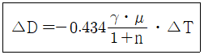

방사선비파괴검사기사 (2018-03-04 기출문제)
1과목: 비파괴검사 개론
1. 다음 중 방사선투과시험에서 X선 필름의 감도를 높이고 노출 시간을 단축시키며, 상질을 개선하기 위해 사용되는 것은?
- 계조계
- 증감지
- 투과도계
- 필름관찰기
(정답률: 60%)

2. 다음 중 초음파탐상검사에서 결함을 가장 쉽게 검출할 수 있는 탐상시점은?
- 거친 다듬질 후
- 정밀 다듬질 전
- 표면이 거칠어지는 열처리 전
- 감쇠를 적게 할 수 있는 열처리 후
(정답률: 50%)
3. 다음 중 비파괴평가법과 그 기본원리의 연결이 잘못된 것은?
- 방사선투과검사 - 투과성
- 초음파탐상검사 - 펄스반사
- 와전류탐상검사 - 전자유도작용
- 중성자투과검사 - 탄성파
(정답률: 62%)
4. 외경 30mm, 두께 2.5mm의 튜브를 직경 20mm 인 코일이 감겨있는 내삽형 탐촉자로 와전류탐상시험할 때, 충전율은 얼마인가?
- 0.44
- 0.64
- 0.67
- 0.80
(정답률: 35%)
5. 자분 집적 모양의 식별성을 향상시키기 위해 고려할 사항이 아닌 것은?
- 식별성은 백그라운드와의 대비에 의해 좌우되므로 형광자분을 사용할 때는 형광휘도가 낮은 것을 선택하여 사용해야 한다.
- 불연속부에 충분한 양의 자분이 흡착되도록 균일하게 자분을 적용해야 한다.
- 적정한 자화로 불연속부로부터 충분한 누설자속이 형성되도록 해야 한다.
- 관찰하기 편리한 환경에서 눈과 시험면의 거리를 두고 바른 관찰을 해야 한다.
(정답률: 63%)
6. 금속을 원자로용, 고융점 구조재료, 반도체, 알칼리토류군(群)으로 분류할 때 반도체군에 해당되는 것은?
- W, Re
- Na, Li
- Ge, Si
- U, Th
(정답률: 67%)
7. 희토류 원소 또는 Th 첨가로 크리프 특성, 내열성 및 주조성이 좋아 제트엔진(Jet engine) 등의 구조용 재료로 가장 많이 사용되는 합금은?
- Al합금
- Mg합금
- Ni합금
- Zn합금
(정답률: 46%)
8. 항온열처리인 마퀜칭(Marquenching)처리를 한 후 얻어지는 조직은?
- 펄라이트
- 마텐자이트
- 베이나이트
- 투루스타이트
(정답률: 59%)
9. 백금(Pt)에 대한 설명으로 옳은 것은?
- 백금은 회백색의 체심입방정 금속이다.
- 비중은 6.7이고, 용융점은 670℃ 정도이며 내식성이 좋으므로 화학공업에 사용한다.
- 백금은 산화되지 않으나 P, S, Si 등의 알칼리, 알칼리토금속의 염류에는 침식된다.
- 45% ~ 85%Rh 합금은 열전대로 사용하며, 0.8% ~ 5%Pd의 백금합금은 장식용으로 사용한다.
(정답률: 35%)
10. 재료시험법 중 동적시험에 해당되는 것은?
- 인장시험
- 충격시험
- 전단시험
- 압축시험
(정답률: 54%)
11. 고속도공구강(SKH2)의 대표적인 조성으로 옳은 것은?
- 18%Mo-4%W-1%Cr
- 18%Mo-4%Cr-1%Mn
- 18%W-4%Cr-1%Vl
- 18%W-4%Mo-1%V
(정답률: 37%)
12. Al-Cu 합금을 용체화처리한 다음 급냉한 후 시효처리할 때 석출되는 금속간화합물은?
- Cu2O
- CuAl2
- CO2Al
- Al2O3
(정답률: 63%)
13. 절삭성을 높이기 위한 쾌삭 황동(free cutting brass)은 황동에 어떤 원소를 1.0~3.5% 정도 첨가시킨 합금인가?
- P
- Si
- Sb
- Pb
(정답률: 49%)
14. 냉간가공된 금속에 대한 설명으로 틀린 것은?
- 냉간가공으로 금속결정 내의 전위는 감소한다.
- 융점이 낮은 금속에서는 가공 후 가열하지 않고 실온에 방치만하여도 회복이 일어난다.
- 냉간가공된 금속을 어닐링하면 회복, 재결정, 결정립성장의 단계를 거친다.
- 냉간가공으로 변형된 금속을 가열하면 그 내부에 새로운 결정립의 핵이 생기고 이것이 성장하여 변형이 없는 결정립으로 치환되는 과정을 재결정이라고 한다.
(정답률: 24%)
15. 경도시험과 그 영문 표기가 틀린 것은?
- 쇼어 경도 : HS
- 비커즈 경도 : HV
- 브리넬 경도 : HB
- 로크웰 경도 : HL
(정답률: 46%)
16. 일반적인 플라스마 아크 용접의 특징으로 틀린 것은?
- 용접속도가 빠르다.
- 용접비드의 폭이 넓다.
- 열에너지의 집중이 좋다.
- 각종 재료의 용접이 가능하다.
(정답률: 53%)
17. 금속 중에서 용접 입열이 일정한 경우에 열전도율이 큰 순서로 나열한 것 중 옳은 것은?
- 구리＞알루미늄＞스테인리스강
- 연강＞스테인리스강＞알루미늄
- 스테인리스강＞구리＞알루미늄
- 알루미늄＞스테인리스강＞구리
(정답률: 45%)
18. 일반적인 서브머지드 아크 용접에 대한 설명으로 옳은 것은?
- 용입 깊이가 얕다.
- 사용 용접전류가 적어 용접능률이 낮다.
- 아크가 눈에 보이므로 용접상태를 확인하면서 용접할 수 있다.
- 용접선이 길고, 연속용접이 가능한 부재에 적용하는 것이 적합하다.
(정답률: 49%)
19. 10분의 용접작업 중 6분동안 아크를 발생시키고, 4분동안 아크를 발생시키지 않고 쉬었다면, 이 용접기의 사용율은?
- 20%
- 40%
- 60%
- 100%
(정답률: 63%)
20. 용접작업에서 피닝(peening)을 실시하는 목적으로 옳은 것은?
- 슬래그를 제거하고 용접부의 강도를 높인다.
- 소성가공에 의한 용접부의 경도를 증가시킨다.
- 가공경화에 따른 용접부의 인성을 증가시킨다.
- 비드 표면층에 성질 변화를 주어 용접부의 인장 잔류 응력을 완화시킨다.
(정답률: 44%)
2과목: 방사선투과검사 원리
21. X선을 발생할 때 관전압이 높아지면 나타나는 현상으로 틀린 것은?
- 투과력이 증대된다.
- 강도가 증대된다.
- 파장이 짧아진다.
- 전자의 방출이 증대된다.
(정답률: 46%)
22. 50Ci의 Ir-192 선원으로부터 20m 떨어진 지점에서의 시간당 조사선량율은 몇 R/h인가? (단, Ir-192의 RHM은 0.48이다)
- 0.002
- 0.06
- 0.8
- 1.2
(정답률: 61%)
23. 물질이 단면적 1cm2의 질량 1g에 대한 광자의 감쇠비율을 나타내는 계수는?
- 선흡수계수
- 원자흡수계수
- 전자흡수계수
- 질량흡수계수
(정답률: 66%)
24. X선과 γ선의 물리적 특성으로 옳은 것은?
- 진공 상태도 투과한다.
- 광속도의 3배로 진행한다.
- 흡수하여 투과하나 산란하지 않는다.
- 질량과 전하를 가지고 있다.
(정답률: 68%)
25. 방사선투과사진의 콘트라스트(△D)는 아래와 같은 식으로 나타난다. 다음 설명으로 틀린 것은?

- γ는 특성곡선의 기울기로 구한다.
- μ는 선흡수계수로서 감쇠곡선에서 구한다.
- n은 축적인자로서 시험체에서 발생한 산란선 강도이다.
- △T가 미소두께차 일 때 △D를 크게 하기 위해서 γㆍμ를 크게 한다.
(정답률: 52%)
26. X선 발생장치에서 관전압이 80kV일 때 발생하는 X선의 최단파장은 약 얼마인가?
- 0.04Å
- 0.08Å
- 0.12Å
- 0.16Å
(정답률: 64%)
27. 방사선투과검사에서 사용하는 현상처리액 중 알칼리성인 것은?
- 수세액
- 정착액
- 정지액
- 현상액
(정답률: 70%)
28. 광자에너지의 방출원리가 다른 것은?
- 제동X선
- 연속X선
- 백색X선
- 특성X선
(정답률: 60%)
29. X선 발생장치의 전파정류방식이 아닌 것은?
- 사이클로트론(Cyclotron)결선 방식
- 그래츠(Gratz)결선 방식
- 빌라드(Villard)결선 방식
- 그리네추어(Granacher)결선 방식
(정답률: 66%)
30. 동중성자핵에 대한 설명으로 맞는 것은?
- 원자번호가 다르고 중성자수가 다르다.
- 원자번호가 다르고 중성자수가 같다.
- 원자번호가 같고 중성자수가 다르다.
- 원자번호가 같고 중성자수가 같다.
(정답률: 80%)
31. 필름콘트라스트에 영향을 주는 경우로 틀린 것은?
- 방사선의 선질을 강화하였다.
- 현상시간을 증가시켰다.
- 필름을 다른 회사의 제품으로 바꾸어 사용하였다.
- 현상액의 강도를 바꾸어 사용하였다.
(정답률: 38%)
32. 방사선투과검사에서 차폐물질의 두께가 증가함에 따라 방사선의 강도 변화에 대한 설명으로 옳은 것은?
- 로그함수적으로 감소된다.
- 로그함수적으로 증가된다.
- 지수함수적으로 감소된다.
- 지수함수적으로 증가된다.
(정답률: 69%)
33. X선의 선흡수계수(μ)에 대한 설명으로 틀린 것은?
- X선의 에너지가 높을수록 선흡수계수는 커진다.
- X선의 에너지가 낮을수록 선흡수계수는 커진다.
- X선의 파장이 짧을수록 선흡수계수는 작아진다.
- 검사체의 원자번호가 낮을수록 선흡수계수는 작아진다.
(정답률: 65%)
34. Ir-192 붕괴에 대한 설명으로 옳은 것은?
- β-선을 방출 후 더욱 불안정한 Pt-193 이 된다.
- 전자포획을 일으킨 후 더욱 불안정한 Os-193이 된다.
- β-선을 방출하여 pT-192가 되거나 전자포획으로 Os-192가 된다.
- β-선이나 전자포획 후 γ선을 방출하지 않는다.
(정답률: 62%)
35. Cs-137 γ선원의 주 방출 에너지로만 나열된 것은?
- 0.31, 0.47, 0.60 MeV
- 0.66 MeV
- 0.084, 0.⑤2 Mev
- 1.33, 1.17 MeV
(정답률: 49%)
36. 방사선투과검사에서 연박스크린의 주요 기능이 아닌 것은?
- 필름의 사진작용 증대
- 2차전자의 방출
- 산란방사선의 흡수
- 필름의 형광작용 증대
(정답률: 40%)
37. 방사성동위원소 중 반감기가 가장 긴 원소는?
- Co-60
- Cs-137
- Ir-192
- Tm-170
(정답률: 66%)
38. 인체의 피폭선량을 나타낼 때 흡수선량에 당해 방사선 가중치를 곱한 양은 무엇인가?
- 선량당량
- 유효선량
- 등가선량
- 예탁선량
(정답률: 60%)
39. 고에너지 가속장치인 선형가속기에 대한 설명으로 옳은 것은?
- 일반적으로 13MeV 출력을 이요하고 있다.
- 10mm 이하의 작은 초점을 갖는다.
- 자기유도 가속기라고도 한다.
- 베타트론이나 반데그라프 장치보다 높은 출력을 얻을 수 있다.
(정답률: 60%)
40. 내부전환에 관한 설명으로 틀린 것은?
- 핵의 과잉에너지가 X선으로 방출된다.
- 궤도전자가 방출된 후 특성 X선이 방출된다.
- 저에너지 및 중원소에서 보다 높은 확률을 가진다.
- 안정한 핵이 궤도전자를 포획한 후 특성 X선을 방출한다.
(정답률: 31%)
3과목: 방사선투과검사 시험
41. 전자방사선투과검사에 대한 설명으로 틀린 것은?
- 전자방사선투과검사는 투과법과 전자방출법이 있다.
- 필름과 스크린 사이를 멀리하여 상을 확대시킨다.
- 필터를 사용하여 경엑스선을 이용한다.
- 두께가 얇고 방사선흡수가 매우 적은 재질로 구성된 시험체 검사에 적용한다.
(정답률: 63%)
42. 다음 중 벽두께 25mm 강구조물을 방사선 투과검사할 때 가장 적합한 장치는?
- 선형가속기
- 베타트론
- 반데그라프장치
- 250kV 엑스선 발생장치
(정답률: 58%)
43. 특수 방사선투과검사법의 고속도 방사선투과검사(High-speed Radiography)에 대한 설명으로 틀린 것은?
- 고속도운동을 하는 기계를 정지상태로 보는 것을 가능하게 하는 방법이다.
- 엑스선관은 가열필라멘트가 아닌 냉음극의 형태이다.
- 엑스선발생기는 큰 고전압콘덴서를 포함하고 있어 아주 짧은 시간동안 지속하는 고전압 펄스를 만든다.
- 노출을 많이 하여 현상처리 시간을 짧게 하는 방법이다.
(정답률: 49%)
44. 방사선투과검사에서 자동현상의 특징에 대한 설명으로 틀린것은?
- 짧은 시간 내에 현상처리 된 방사선투과사진을 얻을 수 있다.
- 아주 정밀하게 조절되는 시간-온도 현상법이다.
- 검사자에 의한 과노출 등을 자동으로 조절할 수 있다.
- 현상실의 크기를 줄일 수 있다.
(정답률: 71%)
45. 낮은 관전압의 엑스선관 창(X-ray tube windows)출구의 재질로 베릴륨(Be)을 사용하는 이유는?
- 밀도가 크기 때문에
- 용융점이 높기 때문에
- 전도율이 낮기 때문에
- 원자번호가 낮기 때문에
(정답률: 53%)
46. 방사선투과검사시 발생되는 산란방사선을 감소하기 위한 도구가 아닌 것은?
- 연박스크린
- 마스크
- 신틸레이터
- 다이아프램
(정답률: 69%)
47. 동위원소의 단위질량당 방사능의 세기를 비방사능(specific activity)이라고 하는데, Ir-192의 비방사능은 약 얼마인가?
- 1200 Ci/g
- 6300 Ci/g
- 10000 Ci/g
- 20000 Ci/g
(정답률: 57%)
48. 다음 중 인공 방사성 동위원소를 만드는 요소가 아닌 것은?
- 중성자 방사화
- 자발 핵분열
- 하전입자의 충돌
- 핵분열 생성물로부터의 분리
(정답률: 52%)
49. 시편의 얇은 부분을 통과하여 필름홀더나 카세트에 도달한 1차 방사선이 이웃하는 두꺼운 부분의 상의 안쪽으로 산란이 되는 현상을 무엇이라 하는가?
- 회절
- 굴절
- 언더컷
- 후방산란
(정답률: 35%)
50. 방사선투과검사에 사용하는 감마선조사장치에 대한 설명으로 틀린 것은?
- 선원용기의 차폐물질은 감손우라늄이나 납을 사용한다.
- 선원고정방식은 모든 방향으로 조사하는 것이 가능한 파노라믹 조사방식이다.
- 선원고정방식은 선원 안내튜브가 필요 없다.
- 선원송출방식은 원격제어기가 필요하다.
(정답률: 44%)
51. 초점의 크기가 4mm인 X선 발생장치로 시험체의 두께 5cm인 철강제를 촬영하고자 한다. 반음영의 크기를 1mm이하로 하기 위해서는 선원과 시험체 표면과의 거리는 최소한 얼마로 하면 되겠는가?
- 20cm
- 25cm
- 30cm
- 36cm
(정답률: 50%)
52. 방사선투과검사 시 증감지의 불량으로 인한 투과사진의 영향을 틀리게 설명한 것은?
- 필름과 납증감지 사이에 외부개재물이 있는 경우, 투과사진에 밝게 나타난다.
- 필름과 형광증감지 사이에 외부개재물이 있는 경우, 투과사진에 밝게 나타난다.
- 납증감지의 스크라치는 투과사진에 검게 나타난다.
- 형광증감지의 스크라치는 투과사진에 검게 나타난다.
(정답률: 56%)
53. 방사선투과검사 시 엑스선 발생장치의 관전류를 증가시킬 경우 나타나는 현상은?
- 음극과 양극거리가 증가한다.
- 노출시간이 증가한다.
- 방사선의 양이 증가한다.
- 파장이 짧은 방사선이 발생한다.
(정답률: 46%)
54. 방사선투과 사진상에 나타나는 주강품의 결함이 아닌 것은?
- 수축관
- 모래물림
- 용락
- 콜드셧
(정답률: 57%)
55. 시험체의 단면 부분만을 명료하게 나타나도록 검사하는 방법은?
- 형광투시(fluoroscopy) 방법
- 단층촬영(tocography) 방법
- 섬광촬영(flash radiography) 방법
- 이동 방사선투과검사(in-motion radiography) 방법
(정답률: 89%)
56. 방사선투과검사시 검사원의 방사선피폭선량을 나타내는 단위는?
- C/kg
- Gy
- Sv
- rad
(정답률: 77%)
57. 방사선 투과사진 상에서 용접부의 길이방향으로 매우 좁고 검은 직선의 형태로 나타나는 결함은?
- 용입불량
- 융합불량
- 언더컷
- 텅스텐혼입
(정답률: 70%)
58. 처음 촬영했을 때보다 선원의 크기가 5배, 시험체와 필름사이의 거리가 3배, 선원과 시험체사이의 거리가 3배로 촬영 되었다면 기하학적 불선명도는 처음의 몇 배가 되는가?
- 1.2
- 5
- 10
- 12
(정답률: 71%)
59. 방사선 작업 종사자가 사용하는 개인피폭 선량계가 아닌 것은?
- 직독식 전리함(Dosimeter)
- 필름배지(Film badge)
- 서베이메터(Surveymeter)
- 열형광선량계(TLD)
(정답률: 60%)
60. 용접부의 방사선투과검사 시 발생위치에 따른 분류에서 열영향부 균열로 분류되는 것은?
- 라미네이션 균열
- 비드 균열
- 크레이더 균열
- 루트 균열
(정답률: 52%)
4과목: 방사선투과검사 규격
61. 스테인리스강 용접부의 방사선 투과 시험 방법 및 투과 사진의 등급 분류 방법(KS D 0237)에 따른 맞대기 이음부의 이중벽 촬영에서 모재의 두께가 10mm이고 양면 살돋움 용접부일 때 재료 두께는?
- 20mm
- 22mm
- 24mm
- 26mm
(정답률: 49%)
62. 원자력안전법령에 규정된 방사선에 해당되지 않는 것은?
- 알파선
- 엑스선
- 중성자선
- 1만 전자볼트 이상의 에너지를 가진 전자선
(정답률: 72%)
63. 강 용접 이음부의 방사선 투과 시험 방법(KS B 0845)에 따라 강판의 맞대기 용접 이음부를 촬영하고자 한다. B급의 상질이 요구될 때 선원과 시험부의 선원측 표면 간의 거리(L1)는 시험부 유효길이(L3)의 몇 배 이상으로 해야 하는가?
- 2배
- 3배
- 4배
- 5배
(정답률: 64%)
64. 방사성 안전관리 등의 기술기준에 관한 규칙에서 방사성동위원소 등을 이동 사용하는 경우의 기술기준이 틀린 것은?
- 야간 방사선작업을 수행하는 경우 필요한 조명기구를 확보할 것
- 방사선작업을 종료하는 경우 개인피폭 선량계를 확인 할 것
- 방사선발생장치를 사용하는 경우
- 방사선작업은 2인 이상을 1조로 편성하여 작업을 수행 할 것
(정답률: 72%)
65. 알루미늄 주물의 방사선 투과 시험 방법 및 투과사진의 등급분류 방법(KS D 0241)의 규정을 설명한 것 중 틀린 것은?
- 필름은 미립자 또는 초미립자를 사용한다.
- 필름은 높은 대조를 얻을 수 있는 불연성이어야 한다.
- 투과도계는 가능한 한 방사선 축에 수직이 되도록 놓는다.
- 투과도계는 이중벽 촬영의 경우, 하부 벽의 방사선원 쪽에 놓는다.
(정답률: 61%)
66. 스테인리스강 용접부의 방사선 투과 시험 방법 및 투과 사진의 등급 분류 방법(KS D 0237)에서 텅스텐이 혼입된 경우는 몇 종 결함인가?
- 제1종
- 제2종
- 제3종
- 제4종
(정답률: 69%)
67. 외부피폭 방어를 위한 3대 원칙에 해당되지 않는 것은?
- 방사선 작업시간에 단축
- 적절한 차폐체의 활용
- 작업종사자와 선원과의 거리 유지
- 전신계수기를 사용한 주기적 측정
(정답률: 59%)
68. 보일러 및 압력용기에 대한 방사선투과검사(ASME Sec. V Art.2)에서 모재두께가 50mm 미만일 때 기하학적 불선명도의 최대 허용치는?
- 0.010 인치
- 0.020 인치
- 0.030 인치
- 0.040 인치
(정답률: 60%)
69. 강 용접 이음부의 방사선 투과 시험 방법(KS B 0845)에 따라 강판의 맞대기 용접 이음부를 촬영할 때 투과도계의 사용방법으로 틀린 것은?
- 필름측에 투과도계를 놓을 경우 투과도계의 각각의 부분에 F의 기호를 붙인다.
- 투과도계의 가장 가는 선이 바깥쪽으로 위치하도록 하여 시험부 유효길이의 양 끝에 둔다.
- 시험부의 유효길이가 투과도계의 나비의 3배 이상인 경우, 투과도계는 중앙에 1개만 둔다.
- 투과도계와 필름간의 거리가 식별 최소 선지름의 10배 이상 떨어지면 투과도계를 필름측에 놓을 수 있다.
(정답률: 69%)
70. 보일러 및 압력용기에 대한 표준방사선투과검사(ASME Sec. V Art. 22 SE-94)에서 필름의 수동현상 시 필름 교반방법에 대한 내용으로 옳은 것은?
- 한 방향으로 약 15초간 교반한다.
- 한 방향으로 약 30초간 교반한다.
- 두 방향으로 약 15초간 교반한다.
- 두 방향으로 약 30초간 교반한다.
(정답률: 54%)
71. 원자력안전법령에서 규정한 표면 방사선량률의 정의는?
- 방사선이 나오는 물체의 표면으로부터 1센티미터의 거리에서 측정한 방사선량률
- 방사선이 나오는 물체의 표면으로부터 5센티미터의 거리에서 측정한 방사선량률
- 방사선이 나오는 물체의 표면으로부터 10센티미터의 거리에서 측정한 방사선량률
- 방사선이 나오는 물체의 표면으로부터 30센티미터의 거리에서 측정한 방사선량률
(정답률: 58%)
72. 알루미늄 평판 접합 용접부의 방사선 투과 시험 방법(KS D 0242)에 규정된 계조계의 종류가 아닌 것은?
- C형
- D형
- F형
- G형
(정답률: 69%)
73. 방사성동위원소가 내장된 감마선 조사기를 운반하려 한다. 방사선량률의 허용기준치를 나타낸 것 중 틀린 것은?
- 감마선 조사기 표면의 방사선량률 : 2 mSv/hr
- 감마선 조사기 표면으로부터 1m 떨어진 위치의 방사선량률 : 0.1 mSv/hr
- 운반차량 표면의 방사선량률 : 2 mSv/hr
- 운반 종사자 승차 위치에서의 방사선량률 0.2 mSv/hr
(정답률: 45%)
74. 다음의 방사선 중 방사선 가중치가 가장 높은 것은?
- 엑스선
- 감마선
- 베타입자
- 알파입자
(정답률: 57%)
75. 원자력안전법령에서 인체의 피폭선량을 나타낼 때 흡수선량에 해당 방사선의 방사선 가중치를 곱한 양을 나타낸 것은?
- 예탁선량
- 등가선량
- 유효선량
- 가중선량
(정답률: 60%)
76. 보일러 및 압력용기에 대한 방사선투과검사(ASME Sev. V Art. 2)에서 규정된 기법이 아닌 것은?
- 단일벽 촬영 기법 - 단일벽 관찰
- 단일벽 촬영 기법 - 이중벽 관찰
- 이중벽 촬영 기법 - 단일벽 관찰
- 이중벽 촬영 기법 - 이중벽 관찰
(정답률: 74%)
77. 보일러 및 압력용기에 대한 방사선투과검사(ASME Sec. V Art. 2)에서 최대 사용전압이 300 kV인 X-선 발생장치의 초점 크기를 측정하는 방법은?
- 파라렉스법
- 핀홀법
- 파노라마법
- X-선 회절법
(정답률: 74%)
78. 어떤 방사선에 대한 차폐체의 반가층이 1mm라고 할 때, 방사선량률을 1/40로 줄이기 위한 차폐체의 두께는?
- 40.32mm
- 15.32mm
- 10.32mm
- 5.32mm
(정답률: 57%)
79. 보일러 및 압력용기에 대한 방사선투과검사(ASME Sec. V Art. 2)에서 선형 상질계의 지정된 선의 인접부에 대한 농도보다 판독범위의 농도가 얼마로 변할 경우 상질계를 추가로 설치하고 방사선투과사진을 재촬영해야 하는가?
- -15% 또는 +30%
- -20% 또는 +30%
- -30% 또는 +15%
- -30% 또는 +30%
(정답률: 78%)
80. 원자력안전법령에는 조직가중치가 규정되어 있다. 다음의 조직 또는 장기 중 조직가중치가 가장 높은 것은?
- 갑상선
- 피부
- 위
- 간
(정답률: 52%)